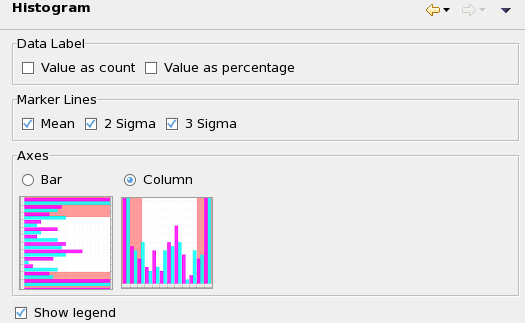

Histogram preference settings
The Histogram preference page lets you set display options for histogram graphs.

These settings are available:
- Data Label: Whether to label the bars or columns with the
corresponding values:
- Value as count: If this option is checked, a number on each bar or column shows how many tests it represents.
- Value as percentage: If this option is checked, a number on each bar or column shows the percentage of tests it represents.
- Marker Lines: Whether to indicate certain statistical values with
lines in the histogram:
- Mean: If this option is checked, a line (- - - - -) indicates the mean of the values in the histogram.
- 2 Sigma: If this option is checked, lines (— - — - —) are drawn at distances of plus and minus two standard deviations from the mean.
- 3 Sigma: If this option is checked, lines (— - - — - - —) are drawn at distances of plus and minus three standard deviations from the mean.
- Axes: Whether the histogram should consist of horizontal bars or vertical columns.
Show legend: If this option is checked, a legend is displayed beside the chart.
Functional changes
- Introduced in SmarTest 7.2.0